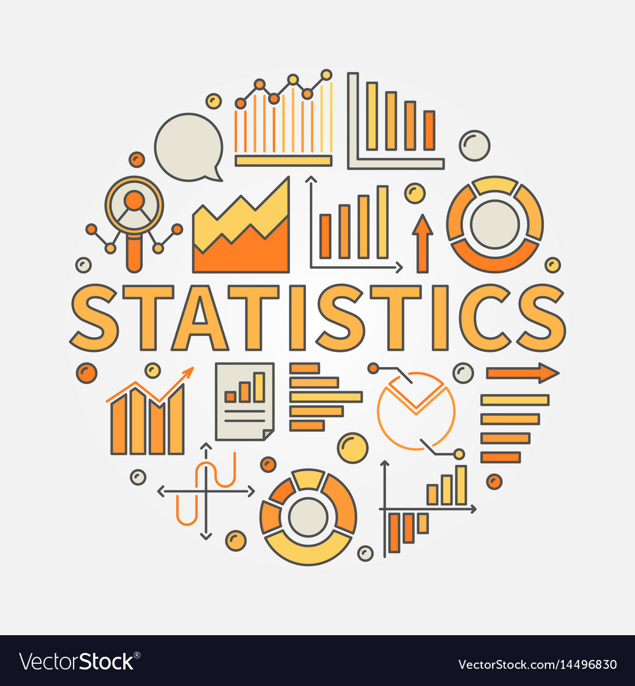
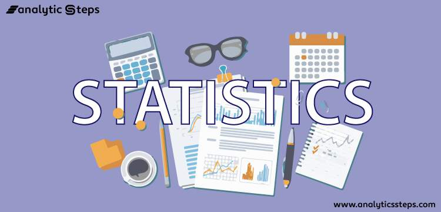

BLOGS
JOINS IN SQL — “A Comprehensive Guide with Real-World Examples”

Join operations are fundamental in databases, enabling us to extract meaningful insights by combining data from multiple tables. Understanding different types of joins and knowing when to use them can greatly enhance your ability to work with databases effectively. In this article, we’ll dive deep into the world of database joins, unraveling their mysteries and providing real-world examples to illustrate their usage
JOINS IN SQL ArticleUnveiling the Box Plot: A Versatile Tool for Data Visualization and Analysis

In the realm of data analysis, visualizing data is paramount to extracting meaningful insights and gaining a deeper understanding of underlying patterns. One powerful and widely used visualization tool is the box plot, also known as a box-and-whisker plot. In this article, we will explore the concept of a box plot, and its components, and delve into the reasons why it is extensively employed in data analysis
Unveiling the Box Plot: A Versatile Tool for Data Visualization and Analysis LinkBasic of Statistics
I have covered the fundamentals of statistics, as it is a crucial skill for various data-driven professions such as Business Analysts, Data Analysts, and Data Scientists, among others. By reading this article, you will gain a comprehensive understanding of the basics of statistics.
Basic of Statistics ArticleStatistics For Data Analyst
In the first part of our series on statistics, we explored the fundamentals of statistical analysis. Now, in this second part, we will delve into the types of data, measures of central tendency, and measures of dispersion. Understanding these concepts is crucial for effectively analyzing and interpreting data. So, let’s dive in
Statistics for Data Analyst ArticleFor More Articles